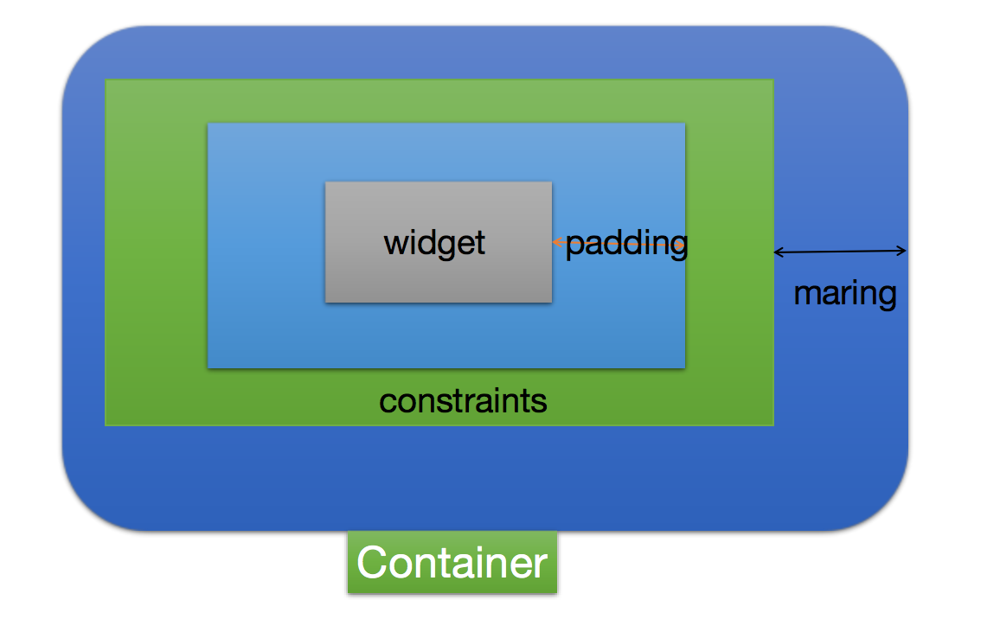
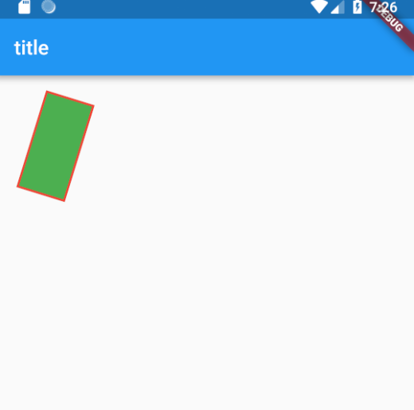

单元素布局，指的是一个布局方式中只支持一个子控件，不支持多控件配置。常用的布局方式有Container、Padding、Align、Center等。（这里只说明基本控件，还有其他常用控件，比如Card，也属于单元素布局控件）
Container
Container是一个相对复杂的布局方式，按照文档描述来说，支持绘制、定位、以及调整大小。A convenience widget that combines common painting, positioning, and sizing widgets.
Container属性
1 | Container({ |
上面注释中简单说明了每个属性的作用，具体布局情况见下图：
绘制过程
按照以下属性顺序绘制。
- transform
先进行矩阵坐标变换，在转换后的矩阵上进行绘制，例如：
1 | body: new Container( |
效果如下：
- decoration
背景装饰，支持color(背景颜色)、image（图片）、border（边框）、borderRadius（圆角边框）、boxShadow（阴影）、gradient（渐变）、backgroundBlendMode（混合模式）、shape（枚举，只支持矩形和圆形）配置。如：
1 | decoration: new BoxDecoration( |
- child 子控件
只支持唯一的子控件，可以没有子控件。
- foregroundDecoration
前景装饰，由于最后绘制，可能会遮挡子控件。
布局策略
策略顺序，看官方文档
Container tries, in order: to honor alignment, to size itself to the child, to honor the width, height, and constraints, to expand to fit the parent, to be as small as possible.
也就是说顺序如下：
- alignment 首先进行对齐操作
- 根据子控件调整自身大小
- 使用width、height以及constraints参数设置控件大小
- 尽可能填充父控件的空间
- 尽可能减少自身大小
也就是说控件本身的大小会进行如下判断：
- alignment 属性是否为null，如果非空，那么整个控件大小会尽量充满父控件；如果父控件设置了unbounded，会尽可能的缩小控件。
- 如果上一步没有确定控件大小，这里会将其设置为子控件大小
- 根据width、height以及constraints来设置控件大小，如果没有，忽略。经过测试，如果同时配置了width、height和constraints，优先使用constraints里面的参数，看源码处理也是如此。
- 如果上面都没有确定空间大小，则根据父控件配置项，默认充满父控件，如果父控件设置了unbounded，会尽可能的缩小控件。
上面的判断过程基本上就是整个控件大小的确定过程。然后在这个基础上增加Padding以及Margin的绘制。
Padding
Padding实际上很容易理解，看它的构造方法：
1 | const Padding({ |
这个控件是基础控件，而不像Container是一个组合控件，它提供了一个内距为padding的子控件布局。如果子控件不存在，则会产生一个宽为left+right，高为top+bottom的区域。
Flutter中不存在Align控件，如果要实现Align效果，也需要通过Padding来完成。
Align
Align的布局也比较简单，看构造方法：
1 | const Align({ |
- alignment设置对齐方式，支持多种对齐方式，包括左上、左中、左下、中上、居中、中下、右上、右中、右下等，同时也支持自定义对齐，以坐标方式表示。
- widthFactor、heightFactor表示宽度、高度的缩放比例，不能为负数。最后控件的大小就是这个缩放比例*子控件的大小。
Center
Center继承自Align，不过是将alignment设置为Alignment.center，其它参数与Align完全一致，使用方法也完全一致。
总结
可以说，Container是单元素布局的集大成者，其它所有单元素控件的能力都可以支持。如果想要做好界面展示效果，首先就需要对Container进行深入了解，玩出花来。